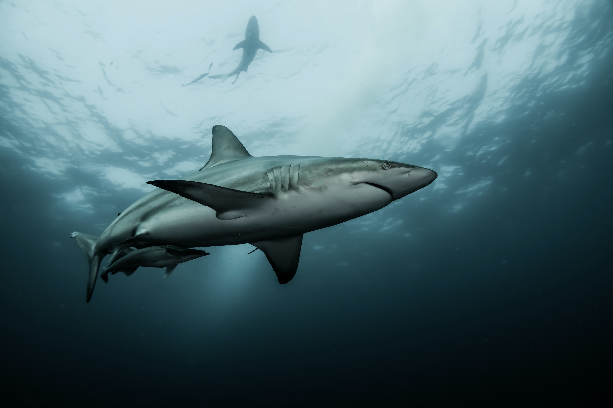

Through the ages sharks have been looked at quite differently from what they actually are, thanks to mythology and popular culture. The book, and then film "Jaws", played a large role, and is often cited as the reason why people are so afraid of sharks, and why they are so misunderstood.
When you first hear the word "shark", what first pops into your head? Do you immediately think of some kind of sea monster, or killer? Does the film Jaws come to mind? When I was very young, I vividly remember seeing the movie Jaws, before that I did not really think much about sharks, I just thought of them as big fish, which they are, but the concept of being attacked, or eaten alive by a shark did not really come to mind, until I saw movies about it. I then became very afraid of them, to the point that even swimming in a lake was a scary thought. That fear led me to being very curious, and wanting to learn more about them.

What are sharks? Sharks are apex predators, the top of the food chain, the rulers of the ocean. But they also have some nick names that you may have never heard of, and probably never would have associated them with. Sharks are also the cleaners of the sea, many sharks do hunt, yes, but sharks are also scavengers, sharks are curious and cautious, they eat up all the dead creatures they find, like whales or other sea creatures.